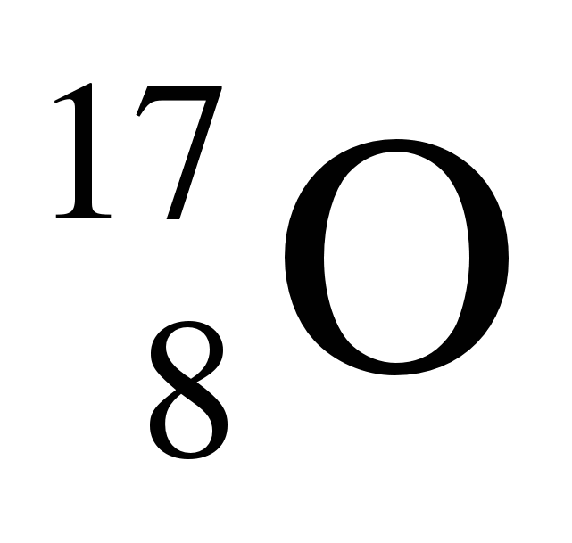
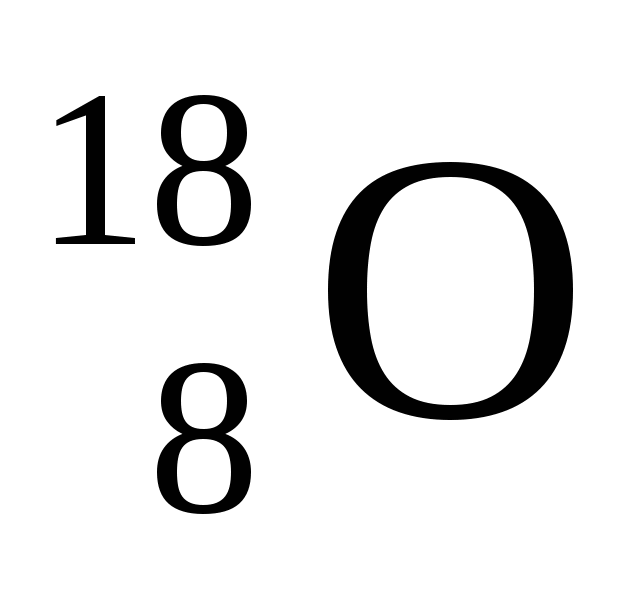
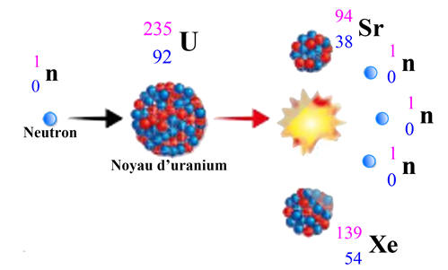
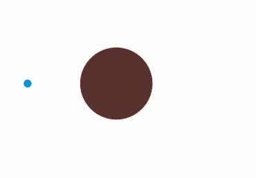
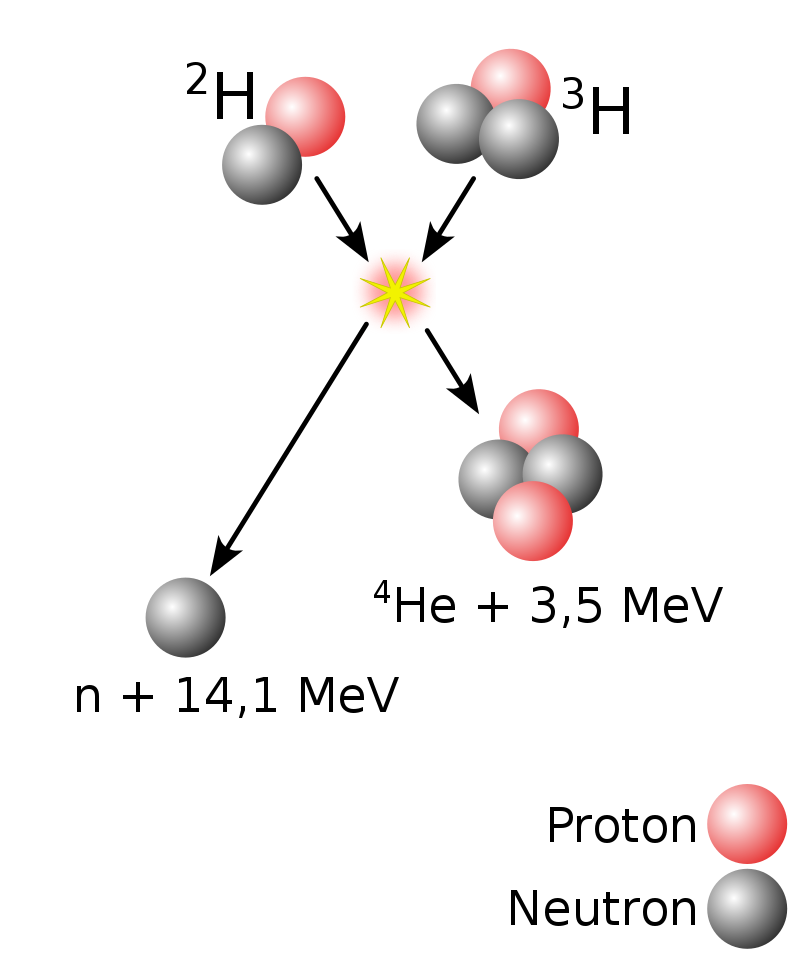
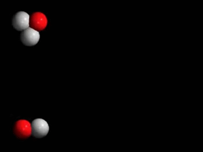

-Isotopes are elements (atoms, ions...) that have a particularity. Indeed, they have the same number of protons but a different number of neutrons !
For example Oxygen:
With the example:
Where else:
-This is the case for atomic nuclei used in nuclear power plants, Uranium. Uranium in particular has many isotopes such as the best known: uranium 235 and 238, but also uranium 233, 234, 236 ...
After the discovery of the phenomenon on spontaneous fission(see second description), we will invent the symbolic writing of nuclear fission:
Which gives this reaction:
 Spring WikipédiaSimilarly for the merger:
 Spring WikipédiaThe reaction:
